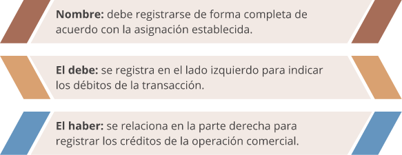
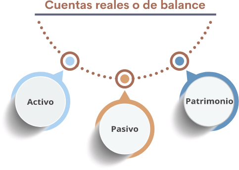
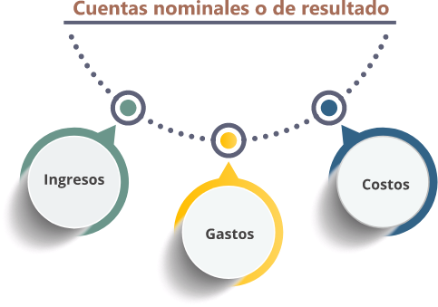
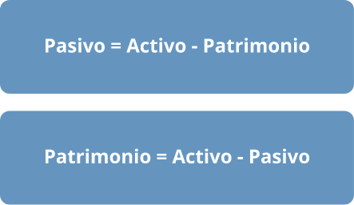
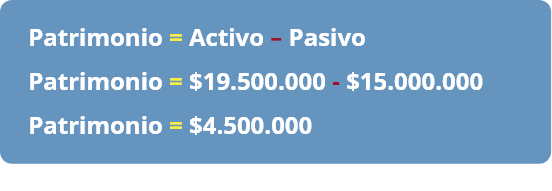

1. Información contable
Bienvenidos a esta unidad, donde continúan fortaleciendo los conceptos relacionados con el área contable y se efectuará un recorrido sobre la historia de la contabilidad, otorgando gran importancia a las cualidades, objetivos, diseño de políticas contables y criterios de reconocimiento, medición, presentación y revelación de acuerdo con las Normas Internacionales de Información Financiera (NIIF).
Información contable
Para empezar, es importante recordar que existen diferentes tipos de empresas que ofrecen productos y servicios con el fin de satisfacer necesidades de los usuarios; por tanto, deben implementar un sistema contable que permita la evaluación y análisis de la información para la toma de decisiones sobre inversión, rentabilidad y endeudamiento. En consecuencia, existen procesos contables y criterios que deben aplicarse para dar cumplimiento a las NIIF, satisfaciendo, de esta manera, las necesidades de los usuarios en cuanto a la generación de información confiable, comparable, compresible, verificable y oportuna (Cuaspa, 2013).
Usuarios de la información contable y financiera
Los usuarios son las personas interesadas en conocer la situación financiera de la empresa, entre ellos, encontramos los siguientes (Vilches, 2019):
- Inversores, accionistas o propietarios.
- Administradores.
- Proveedores.
- Clientes.
- Colaboradores.
- Entes de control.
Campo de acción de la contabilidad o información contable
De acuerdo con el tipo de empresa y/o campo de acción, la contabilidad se clasifica de la siguiente manera (Vilches, 2019):
Contabilidad pública
Se ocupa de las transacciones realizadas por entidades del Estado y, por ende, se rigen por las normas que expida la Contaduría General de la Nación.
Contabilidad de servicios
Se ocupa de las actividades realizadas por empresas que prestan servicios, con el fin de satisfacer necesidades.
Contabilidad comercial
Se ocupa de las actividades realizadas por empresas que se dedican a la compra y venta de productos.
Contabilidad de costos
Se ocupa de las actividades realizadas por empresas industriales, que se encargan de transformar materia prima en producto terminado.
Contabilidad gerencial
Sirve como apoyo o herramienta para el área administrativa de una empresa, con el fin de aportar a la adecuada toma de decisiones y generación de acciones que permitan la evaluación de desempeño y cumplimiento de objetivos.
1.1 Historia, cualidades y objetivos de la información contable
Historia de la contabilidad (Angulo, 2018; Santos-Cid, 2018):
En el año 6000 a.n.e., con el surgimiento de la agricultura, la ganadería y el comercio surgió la necesidad de contabilizar las transacciones de estas actividades. Se tiene evidencia de trueque en el templo rojo de Babilonia hacia el año 5.200 años a.n.e. Las primeras civilizaciones conocían operaciones aritméticas rudimentarias, llegando a crear elementos auxiliares para contar, sumar y restar, utilizando medios muy elementales inicialmente. Luego, desarrollarían medios y prácticas más avanzadas como la creación de monedas como único instrumento de intercambio. También, hay evidencia de que en Babilonia se realizaron registros de ingresos y gastos 3.600 años a.n.e. En la época del imperio egipcio, 2.550 años a.n.e., se sabe de anotaciones contables de operaciones mercantiles del imperio.
Objetivos de la información contable
Según el Consejo de Normas Internacionales de Contabilidad (2018), el objetivo de la información financiera es “Proporcionar información financiera sobre la entidad que informa que sea útil a los inversores, prestamistas y otros acreedores existentes y potenciales para tomar decisiones sobre el suministro de recursos a la entidad. Esas decisiones conllevan, comprar, vender o mantener patrimonio e instrumentos de deuda, y proporcionar o liquidar préstamos y otras formas de crédito” (p. 10).
Información contable
Las cualidades de la información contable hacen referencia a las características que debe tener la contabilidad, con el fin de ser útil para los usuarios; entre ellos, los inversores, pues su objetivo radica en obtener información comparable, verificable y oportuna para la toma de decisiones.
Según el Consejo de Normas Internacionales de Contabilidad (2018), las características cualitativas fundamentales y de mejora son:
Relevancia
También denominado materialidad o importancia relativa, hace referencia al reconocimiento o no de un hecho económico, el cual puede afectar significativamente la toma de decisiones.
Representación fiel
La información debe estar completa de acuerdo con los hechos económicos presentados. Así mismo, debe ser neutral y objetiva, evitando los sesgos en la información presentada y garantizando que esté libre de error.
Características de mejora
Comparabilidad
Se refiere a la comparación que se realiza con otras entidades con información similar o con la misma entidad en diferentes periodos.
Verificabilidad
Es la representación fiel de los hechos económicos, a partir de la revisión del registro de las operaciones y los procesos mediante la observación directa.
Oportunidad
Consiste en obtener la información en el momento adecuado para la toma de decisiones, por ende, debe estar actualizada.
Comprensibilidad
La información debe ser clara y concisa, garantizando ser comprensible para los diferentes usuarios.
Para que la información sea útil es importante dar aplicabilidad a las características fundamentales y de mejora simultáneamente, esto garantiza que la información cumpla con los estándares exigidos y contribuya con la toma decisiones.
1.2 Marco conceptual bajo estándares internacionales
El Consejo de Normas Internacionales de Contabilidad (2018), establece los criterios que se tienen en cuenta para el registro de los hechos económicos y plantea los propósitos del Marco Conceptual para la Información Financiera:
-
Ayudar al Consejo de Normas Internacionales de Contabilidad (Consejo) a desarrollar Normas NIIF (Normas) que estén basadas en conceptos congruentes (p. 8).
-
Asistir a los preparadores para desarrollar políticas contables congruentes cuando no es aplicable ninguna Norma a una transacción específica u otro suceso, o cuando una Norma permite una opción de política contable (p. 8).
-
Ayudar a todas las partes a comprender e interpretar las Normas (p.8).
El Marco Conceptual para la Información Financiera fue expedido inicialmente en 1989 por el Comité de Normas Internacionales de Contabilidad (IASC). Posteriormente, fue ampliado por la junta internacional de normas de contabilidad (IASB) y publicado en septiembre de 2010, donde permanece el documento inicial y se registran otras novedades. Fue revisado, modificado y emitido una vez más el 29 de marzo de 2018, con el fin de realizar mejoras al documento en cuanto a conceptos de reconocimiento, medición, presentación y revelación en la aplicación contable. Estas últimas disposiciones comenzaron a implementarse a partir del 1 de enero de 2020.
La relación entre objetivos, características y elementos de los estados financieros de propósito general es importante para la generación de información comparativa que contribuya con la toma de decisiones (Consejo de Normas Internacionales de Contabilidad, 2018).
Entre los estados financieros se encuentran:
- Estado de situación financiera.
- Estado de resultados integral.
- Estado de cambio en el patrimonio.
- Estado de flujos de efectivo.
- Notas a los estados financieros.
Elementos de los estados financieros
El Estado de situación financiera refleja la información de los elementos de activo, pasivo y patrimonio, los cuales se detallan en el Marco Conceptual de Información Financiera y en la Norma Internacional de Contabilidad (NIC), de la siguiente manera:
Definición de activo
Es un recurso económico presente controlado por la entidad como resultado de sucesos pasados, que tiene el potencial de producir beneficios económicos.
Definición de pasivo
Es una obligación presente de la entidad de transferir un recurso económico como resultado de sucesos pasados.
Definición de patrimonio
Es la parte residual de los activos de la entidad, una vez deducidos todos sus pasivos.
En el estado de resultados integral, se encuentran los elementos de ingresos y gastos (Consejo de Normas Internacionales de Contabilidad, 2018):
Definición de ingresos
Son incrementos en los activos o disminuciones en los pasivos que dan lugar a incrementos en el patrimonio, distintos de los relacionados con aportaciones de los tenedores de derechos sobre el patrimonio
Definición de gastos
Disminuciones en los activos o incrementos en los pasivos que dan lugar a disminuciones en el patrimonio, distintos de los relacionados con distribuciones de los tenedores de derechos sobre el patrimonio.
1.3 Reconocimiento, medición, presentación, revelación y baja de cuentas de los elementos de los estados financieros
Se relacionan los criterios de reconocimiento de los elementos de los estados financieros, teniendo en cuenta, para su registro, las cualidades fundamentales de materialidad relativa y representación fiel; aunado a ello, expresa la baja de cuentas cuando los elementos de los estados financieros no cumplen con la definición establecida; por lo tanto, se realiza una eliminación parcial o total de dichas cuentas (Consejo de Normas Internacionales de Contabilidad, 2018).
Reconocimiento
Es el proceso de registrar los hechos económicos generados en el transcurso normal de las operaciones de la empresa, los cuales se verán reflejados en los estados financieros una vez se verifica que cumplan con el concepto de los elementos de los estados financieros.
Cabe resaltar que un activo, pasivo o patrimonio, para ser reconocido en el estado de situación financiera, debe cumplir con su respectiva definición, atendiendo a las características que se establecen. De igual forma, los ingresos y gastos se reconocerán en el estado de resultados integral solamente si cumplen con la definición respectiva. En consecuencia, el reconocimiento de un activo y un pasivo genera simultáneamente el reconocimiento de un ingreso y un gasto, teniendo en cuenta la transacción realizada. Esto es denominado ocasionalmente correlacional de costos e ingresos; por ejemplo, suele presentarse en la venta de bienes y/o servicios donde se reconoce el ingreso por actividades ordinarias y a su vez el activo (efectivo).
Baja en cuentas
Cuando se habla de baja, en cuentas de un activo o un pasivo, se hace referencia a la eliminación total o parcial de este elemento a partir de dos situaciones posibles:
a. Que la empresa pierda el control del activo reconocido.
b. Que la empresa deja de tener una obligación presente.
El principal objetivo de dar de baja las cuentas es reflejar la realidad económica de la empresa, donde se registran los elementos que cumplan los criterios de reconocimiento y medición, con el fin de que sean reflejados en los estados financieros y, en consecuencia, se genere información útil, relevante y oportuna.
Medición
A continuación, se describen las bases, características, factores y técnicas para tener en cuenta al momento de realizar la medición de un elemento de los estados financieros (Consejo de Normas Internacionales de Contabilidad, 2018).
Bases de medición
La base de medición es la cuantificación en términos monetarios de los elementos de los estados financieros. De acuerdo con las políticas y lineamientos normativos se presentan diferentes bases, por ello, es importante seleccionar la base de medición más adecuada para presentar la información financiera atendiendo a los estándares internacionales (Consejo de Normas Internacionales de Contabilidad, 2018):
- Costo histórico
- Valor corriente
- Valor razonable
- Valor en uso y valor de cumplimiento
- Costo corriente
Es el precio de transacción, el valor de adquisición, de compra o creación de un activo. Es el valor de la contraprestación recibida al obtener el pasivo.
“Las mediciones del valor corriente proporcionan información monetaria sobre activos, pasivos, e ingresos y gastos relacionados, usando información actualizada para reflejar las condiciones en la fecha de medición. Debido a la continua actualización, los valores corrientes de activos y pasivos reflejan los cambios, desde la fecha de medición anterior, en las estimaciones de flujos de efectivo y otros factores reflejados en los valores corrientes” (Consejo de Normas Internacionales de Contabilidad, 2018. p. 44).
“Valor razonable es el precio que se recibiría por vender un activo o que se pagaría por transferir un pasivo en una transacción ordenada entre participantes de mercado, en la fecha de la medición” (Consejo de Normas Internacionales de Contabilidad, 2018. p. 44).
“El valor en uso es el valor presente de los flujos de efectivo, o de otros beneficios económicos, que una entidad espera obtener del uso de un activo y de su disposición final. El valor de cumplimiento es el valor presente de los flujos de efectivo o de otros beneficios económicos, que una entidad espera verse obligada a transferir a medida que satisface un pasivo” (Consejo de Normas Internacionales de Contabilidad, 2018. p. 45).
“El costo corriente de un activo es el costo de un activo equivalente en la fecha de medición, que comprende la contraprestación que se pagaría en la fecha de medición más los costos de transacción en los que se incurriría en esa fecha” (Consejo de Normas Internacionales de Contabilidad, 2018. p. 45).
Para seleccionar las bases de medición, que se relacionarán en el Manual de políticas contables, es fundamental analizar el tipo de empresa y su entorno, tendiendo en cuenta las circunstancias y eventos que se generen para determinar lo más adecuado para la organización. Aunado a ello, se tiene en cuenta el concepto y características de los elementos de los estados financieros, las cualidades fundamentales y de mejora.
Es de suma importancia presentar información financiera confiable, oportuna, comprensible y comparable, con el fin de facilitar la toma de decisiones a la gerencia:
“La comunicación efectiva de la información de los estados financieros requiere: (a) centrarse en los objetivos y principios de presentación e información a revelar en lugar de centrarse en reglas; (b) clasificar la información de forma que agrupe las partidas similares juntas y las diferentes de forma separada; y (c) agregar información de forma que no se ensombrezca con detalles innecesarios o agregación excesiva” (Consejo de Normas Internacionales de Contabilidad, 2018).
1.4 Política contable
Las políticas contables son las normas, bases, reglas y procedimientos que diseña e implementa la empresa para aplicar los criterios de reconocimiento, medición, presentación y revelación de los elementos de los estados financieros: activo, pasivo, patrimonio, ingresos y gastos. Finalmente, con su ejecución, se generan los estados financieros de propósito general; por ende, requiere de cuidado, análisis y adecuada aplicación con el fin de que los procedimientos establecidos sean acordes con los estándares internacionales (Cuaspa, 2013; Vilches, 2019; Angulo, 2018).
Es importante resaltar que las políticas contables se generan de acuerdo con el tipo de empresa y su entorno. Deben adaptarse a situaciones particulares de acuerdo con la dinámica del negocio. Son preparadas por la gerencia o área administrativa, teniendo en cuenta que son los usuarios que mayor conocimiento tienen de la empresa. Esto permitirá crear lineamientos adecuados para la presentación y revelación de estados financieros. Sin embargo, la gerencia y el área administrativa pueden contar con la asesoría del contador público para el diseño de las políticas o, en su defecto, establecer el grupo que puede participar en su elaboración.
Para diseñar las políticas contables es importante identificar el grupo de presentación de información financiera: Grupo 1-NIIF plenas, Grupo 2-NIIF Pymes, Grupo 3– NIF Microempresas. Según los lineamientos del Decreto Único Reglamentario -DUR- 2420 de 2015, el grupo 1, posee las siguientes características:
a.Emisores de valores. Entidades y negocios fiduciarios que tengan valores inscritos en el Registro Nacional de Valores y Emisores – RNVE en los términos del artículo 1.1. 1. 1. 1. del Decreto 2555 de 2010.
b.Entidades y negocios de interés público.
c.Entidades que no estén en los literales anteriores, que cuenten con una planta de personal mayor a 200 trabajadores o con activos totales superiores a 30.000 salarios mínimos mensuales legales vigentes (SMMLV) y que, adicionalmente, cumplan con cualquiera de los siguientes parámetros:
-
Ser subordinada o sucursal de una compañía extranjera que aplique NIIF plenas.
-
Ser subordinada o matriz de una compañía nacional que deba aplicar NIIF plenas.
-
Ser matriz, asociada o negocio conjunto de una o más entidades extranjeras que apliquen NIIF plenas.
-
Realizar importaciones o exportaciones que representen más del 50% de las compras o de las ventas respectivamente.
Objetivo
1. El objetivo de esta norma es prescribir los criterios para seleccionar y modificar las políticas contables, así como el tratamiento contable y la información a revelar acerca de los cambios en las políticas contables, de los cambios en las estimaciones contables y de la corrección de errores. La Norma trata de realzar la relevancia y fiabilidad de los estados financieros de una entidad, así como la comparabilidad con los estados financieros emitidos por ésta en periodos anteriores, y con los elaborados por otras entidades.
2. Los requerimientos de información a revelar relativos a políticas contables, excepto los referentes a cambios en las políticas contables han sido establecidos en la Norma Internacional de Contabilidad (NIC 1).
Alcance
3. Esta norma se aplicará en la selección y aplicación de políticas contables, así como en la contabilización de los cambios en estas, los cambios en las estimaciones contables y en la corrección de errores de periodos anteriores.
4. El efecto impositivo de la corrección de los errores de periodos anteriores, así como de los ajustes retroactivos efectuados al realizar cambios en las políticas contables se contabilizará de acuerdo con la Norma Internacional de Contabilidad (NIC 12), y se revelará la información requerida por esta norma.
Elementos
Para elaborar las políticas de la empresa es importante tener en cuenta
1Identificar el direccionamiento estratégico de la empresa: misión, visión, políticas, objetivos, principios, etc.
2Analizar el entorno en el cual se desenvuelve y, de esta manera, determinar el tipo de transacciones y la importancia relativa.
3Conocer e interpretar las Normas Internacionales de Información Financiera. De acuerdo con el grupo se aplicarán NIIF plenas, NIIF PYMES y microempresas.
4Establecer las bases de reconocimiento, medición, presentación y revelación de los estados financieros, teniendo en cuenta los estándares internacionales y la dinámica del negocio.
5Poseer el compendio de los estados financieros de propósito general.
Una vez se tiene claridad de la información, es importante iniciar con el diseño del manual de políticas contables. Para ello, se relacionan los siguientes elementos (Warren, Reeves y Duchac, 2016; Santos-Cid, 2018; Vilches, 2019; Angulo, 2018):
1.Información de la empresa: se presenta la reseña histórica, direccionamiento estratégico, objeto social, proveedores, clientes, recursos.
2.Marco normativo aplicable.
3.Identificación y análisis de los requisitos del grupo de presentación de información financiera.
4.Importancia del diseño e implementación.
5.Responsabilidades del cargo, de quien prepara el manual de políticas contables.
6.Definiciones.
7.Objetivo del manual.
8.Alcance.
9.Análisis de las características fundamentales y de mejora.
10.Definición de los elementos y cuentas de los elementos de los estados financieros.
11.Reconocimiento de las cuentas de activo, pasivo, patrimonio, ingresos y gastos. Es importante desarrollarlo detalladamente, siendo descriptivo en las bases que se establecen de acuerdo con lo estipulado en la norma internacional, desagregando cada una de las cuentas.
12.Medición inicial y posterior de cada una de las cuentas pertenecientes a los elementos de los estados financieros.
13.Presentación y revelación de los estados financieros.
2. Fundamentos contables
Una vez analizada la historia de la contabilidad, objetivos, cualidades y criterios de reconocimiento, medición, presentación y revelación de los estados financieros, se procederá a revisar los conceptos clave que dan cumplimiento al principio de partida doble y ecuación contable. Esto, con el objetivo de generar registros conforme a los documentos contables y, reflejar en los estados financieros de propósito general la situación económica de la empresa.
Para lograr un aprendizaje significativo es indispensable tener claridad de cada uno de los conceptos relacionados en las temáticas anteriores. Algunos conceptos clave de los estados financieros son: activo, pasivo, patrimonio, ingresos y gastos.
Recuerde que cada uno tiene una definición conceptual particular y características para su reconocimiento y medición. A partir de allí, se inicia con el registro de las transacciones generadas en el curso normal de las operaciones de una empresa.
Es importante resaltar que, de acuerdo con la globalización y el incremento de las transacciones comerciales, surge la necesidad de implementar un sistema armónico y homogéneo que garantice utilidad, pertinencia, comparabilidad y comprensibilidad, en términos de los lineamientos establecidos en las Normas Internacionales de Información Financiera (Vilches, 2019).
La contabilidad como herramienta administrativa y de control, permite la toma decisiones en cuanto a inversión, endeudamiento y rentabilidad; por ello, la necesidad de establecer el sistema actualizado y que cumpla con la normativa vigente en aspectos contables, financieros, tributarios y laborales (Vilches, 2019).
2.1 Hecho contable: concepto, clasificación
Concepto
El hecho contable hace referencia a la transacción u operación realizada por la empresa que debe ser registrada de acuerdo con los criterios de reconocimiento y medición. Además, se deben tener en cuenta las políticas diseñadas por la entidad.
Esta parte es fundamental, aquí se tiene en cuenta si la transacción que se generó hace parte de un activo, pasivo, patrimonio, ingresos o gastos; de allí, la importancia de conocer la definición y características establecidas para su reconocimiento. De igual forma, se tienen en cuenta las bases de medición, las cuales se encuentran registradas en las políticas contables que fueron diseñadas conforme las directrices señaladas en la NIC 8 (CTCP, 2010).
Se presenta con frecuencia la confusión entre una cuenta del activo con una cuenta del patrimonio o un pasivo con un gasto. Por lo anterior, es muy importante analizar los conceptos y, de esta manera, determinar su clasificación de acuerdo con los elementos de los estados financieros, seguidamente, registrarlos en la contabilidad. Cabe resaltar, que un error en la contabilización de estos hechos contables genera información no confiable para la toma de decisiones y se infringen las cualidades de la información contable. Por tanto, cualquier error u omisión debe generar un ajuste contable, con el fin de emitir información confiable y oportuna. Debe recordarse que el registro se hace de forma cronológica, en el idioma castellano, utilizando la moneda funcional.
De acuerdo con lo anterior, se requiere de personal con suficiente experticia para llevar a cabo los procesos contables de forma óptima, garantizando, de esta manera, la representación fiel de las transacciones generadas. En consecuencia, se emitirán los estados financieros y respectivos análisis que permitan evaluar el desempeño de la entidad y, así mismo, se tomarán acciones para alcanzar los objetivos deseados.
Clasificación
Una vez se ha realizado la clasificación de los elementos que intervienen en las transacciones generadas en la empresa, se realiza la contabilización a través de un asiento contable, los cuales se clasifican de la siguiente manera (Warren, Reeves y Duchac, 2016; Santos-Cid, 2018; Vilches, 2019; Angulo, 2018):
Asiento simple
Es cuando intervienen dos cuentas, una que se registra en el debe y la otra en el haber, dependiendo del tipo de operación y el elemento de los estados financieros que se haya clasificado.
Ejemplo: cuando se realiza una consignación bancaria, se utilizan dos cuentas del activo. Se debita la cuenta de banco, registrando el aumento y la cuenta de efectivo (caja), se acredita registrando la disminución, como se relaciona a continuación:
Tabla 1. Asiento simple
Cuenta |
Debe |
Haber |
| Bancos | $ 1.000.000 | |
| Caja | $ 1.000.000 | |
| Total | $ 1.000.000 | $ 1.000.000 |
De acuerdo con lo anterior, se observa que en el débito y crédito se registra el mismo valor, presentan un equilibrio en la transacción; es decir, se igualan débitos y créditos, lo que es denominado principio de partida doble.
Asiento compuesto
Es la operación donde intervienen más de dos cuentas. Generalmente, sucede cuando se registran compras y ventas de productos, donde se relacionan cuentas como el impuesto sobre las ventas por pagar (IVA) y retenciones en la fuente por renta, retenciones del Impuesto de Industria y Comercio (ICA) o Retenciones de IVA.
Ejemplo: se realiza una venta por $10.000.000 a crédito, calcular IVA del 19 %. En esta transacción intervienen tres cuentas: ingresos por actividad ordinarias (crédito) correspondiente a los ingresos, IVA generado (débito) de los pasivos y, finalmente, la cuenta de clientes (crédito) perteneciente al activo. De acuerdo con la naturaleza de las cuentas y si se presenta un aumento o disminución, se registra la transacción mediante el asiento contable como se observa a continuación:
Tabla 2. Asiento compuesto
Cuenta |
Debe |
Haber |
| Clientes | $ 11.900.000 | |
| IVA generado | $ 1.900.000 | |
| Ingresos por actividades ordinarias |
$ 10.000.000 | |
| Total | $ 11.900.000 | $ 11.900.000 |
Es importante resaltar que en el registro anterior se aplica nuevamente el principio de partida doble, donde se registra el ingreso por el valor monetario de la transacción ($10.000.000), posteriormente se calcula el valor del IVA correspondiente a la tarifa vigente del año 2020 del 19 %, el cual da como resultado $1.900.000. Finalmente, se determina el valor de clientes, donde se suma el valor del ingreso y el IVA, teniendo en cuenta que este último aumenta el valor del producto y, por ende, incrementa la cuenta por cobrar (clientes), donde se registra un valor total de $11.900.000.
2.2 Cuenta: concepto y clasificación
En el numeral anterior se habló de hechos económicos y la forma de registrar una transacción de acuerdo con la clasificación de este. Por ende, se continúan fortaleciendo estos conceptos mediante la orientación de la definición de cuenta y su clasificación.
Cuenta
A través de las cuentas se clasifican y registran las transacciones. Es el nombre con el cual se registran de forma ordenada las diferentes operaciones comerciales generadas en una empresa. Es esencial que estas operaciones se elaboren en el momento que suceden; contribuyendo así a la obtención de información contable comprensible y oportuna (Warren, Reeves y Duchac, 2016; Santos-Cid, 2018; Vilches, 2019; Angulo, 2018).
La cuenta se encuentra integrada por los siguientes elementos:
Cuando se registran las operaciones comerciales en el comprobante diario se procede a determinar el saldo de las cuentas. En caso de manejar software contable, se posibilita extraer los auxiliares de cada cuenta según la necesidad que surja para su análisis o consulta (Warren, Reeves y Duchac, 2016; Santos-Cid, 2018; Vilches, 2019; Angulo, 2018).
Determinar el saldo significa restar los valores monetarios que se encuentran registrados en el debe y en el haber. Esta acción se realiza con la misma cuenta. Por ejemplo, se desea conocer el saldo de la cuenta de caja, entonces se revisan todos los movimientos débitos y los créditos; seguidamente, se determina la diferencia y el resultado de esta operación es el saldo de la cuenta caja; este saldo refleja el dinero con que se cuenta en efectivo y, por ser del activo, su naturaleza es débito.
Clasificación de las cuentas
En la primera unidad temática se analizó el concepto de los elementos de los estados financieros, conforme a lo estipulado en el Marco Conceptual de Información Financiera (CTCP, 2010). A partir de ello, se profundizó en el concepto y se analizó su naturaleza con el fin de registrar la transacción de forma correcta y, de esta manera generar reportes útiles para la administración.
Las cuentas de acuerdo con su naturaleza se encuentran clasificadas en reales o de balance, y nominales o de resultado (Warren, Reeves y Duchac, 2016; Santos-Cid, 2018; Vilches, 2019; Angulo, 2018; CTCP, 2010):
Cuentas reales o del balance (situación financiera)
Son aquellas que intervienen en la elaboración del Estado de situación Financiera. Entre ellas, se encuentran: activo, pasivo y patrimonio.
Activo:
- Recurso controlado por la entidad.
- Surge de eventos pasados.
- En un futuro se espera recibir beneficios económicos
- Es fiable su valor.
Movimiento de las cuentas del activo:
- Inician y aumentan en el débito.
- Disminuyen y se cancelan en el crédito.
- Su saldo es débito.
Pasivo:
- Obligación presente de la entidad.
- Surge de eventos pasados.
- Se espera desprender de beneficios económicos cuando se cancele parcial o totalmente la deuda.
- Su valor sea fiable.
Movimiento de las cuentas del pasivo:
- Inician y aumentan en el crédito.
- Disminuyen y se cancelan en el débito.
- Su saldo es crédito.
Patrimonio:
- Es la diferencia entre el activo y pasivo.
Movimiento de las cuentas del patrimonio:
- Inician y aumentan en el crédito.
- Disminuyen y se cancelan en el débito.
- Su saldo es crédito.
Cuentas nominales o de resultado:
Denominadas de esta forma porque pertenecen al estado de resultados. Son aquellas cuentas que determinan la utilidad o pérdida del ejercicio al finalizar el periodo contable. Se componen de las cuentas de ingresos, gastos y costos de venta o producción, de acuerdo con el tipo de empresa y la norma local (Colombia), que se relaciona en el Decreto 2649 de 1993. Considérese que bajo normas internacionales no se relaciona la figura de costos, pues estos hacen parte de los gastos, los cuales disminuyen los beneficios económicos. Sin embargo, se relaciona su concepto para dar claridad al contenido.
Ingresos:
- Hace referencia a los incrementos de los beneficios económicos.
- Su incremento aumenta el patrimonio neto.
Movimiento de las cuentas de ingresos:
- Inician y aumentan en el crédito.
- Disminuyen y se cancelan en el débito.
- Su saldo es crédito.
Gastos:
- Relaciona las disminuciones de los beneficios económicos.
- Dan como resultado disminuciones en el patrimonio neto.
Movimiento de las cuentas de gastos:
- Inician y aumentan en el crédito.
- Disminuyen y se cancelan en el débito.
- Su saldo es crédito.
Costos: hace referencia a la inversión que se realiza para adquirir el producto que se desea ofertar o se pretender fabricar, depende del objeto social de la empresa. Se clasifican en costos de ventas y costos de producción:
Costos de ventas: son aplicados por las empresas comerciales, que se dedican a la compra y venta de bienes. El costo de estas empresas es el valor de adquisición del bien.
Costos de producción: son calculados por las empresas industriales que se encargan de transformar materia prima en producto terminado. Allí intervienen los elementos del costo: Materia Prima Directa (MPD), Mano de Obra Directa (MOD), Costos Indirectos de Fabricación (CIF).
Movimiento de las cuentas de costos:
- Inician y aumentan en el débito.
- Disminuyen y se cancelan en el crédito.
- Su saldo es débito.
Finalmente, para resumir el movimiento y naturaleza de las cuentas, lo invitamos a revisar el siguiente gráfico:
Clases de cuentas |
Aumento |
Disminuye |
| Activo | Débito | Crédito |
| Pasivo | Crédito | Débito |
| Patrimonio | Crédito | Débito |
| Ingresos | Crédito | Débito |
| Gastos | Débito | Crédito |
| Costos | Débito | Crédito |
Para lograr uniformidad en el momento de registrar las transacciones realizadas por las empresas y, dar claridad y confiabilidad en dichos registros se crea el Plan Único de Cuentas -PUC-. Por este motivo, en Colombia existen 19 PUC, entre ellos se encuentran el decreto 2650 de 1993, que es utilizado para comerciantes.
El PUC se encuentra integrado por el catálogo de cuentas, descripciones y dinámicas que orientan y facilitan el registro de las transacciones generadas.
En coherencia con las normas internacionales no se utiliza el Plan Único de Cuentas. Sin embargo, en Colombia las empresas siguen utilizándolo. Los PUC han sido modificados conforme a las necesidades de las empresas a través del tiempo. En algunos casos se incorporan o eliminan cuentas. También, se cambian nombres y códigos con el fin de generar estados financieros que cumplan con la taxonomía XBRL.
La taxonomía XBRL (eXtensible Business Reporting Language) es una norma que se usa para comunicar información financiera entre preparadores y usuarios de la información financiera. La Fundación IFRS es responsable del desarrollo de la representación XBRL de las NIIF - incluyendo las Normas NIC, las Interpretaciones CINIIF y la Norma NIIF para las PYMES - emitida por el Consejo de Normas Internacionales de Contabilidad (2018), conocida como la Taxonomía NIIF, la cual establece (IFRS Foundation, 2019):
- La jerarquía de la taxonomía y los elementos que la componen.
- El formato requerido de estos elementos, tales como texto, valores monetarios, etc.
- La referencia a las Normas NIIF con las que se relacionan estos elementos.
Catálogo de cuentas
Allí se encuentran registradas las cuentas con sus respectivos niveles, los cuales se revisan a continuación con un ejemplo:
Clase |
El primer dígito |
1 ACTIVO |
| Grupo | Los dos primeros dígitos. | 11 Disponible. |
| Cuenta | Los cuatro primeros dígitos. | 1110 Bancos. |
| subcuenta | Los seis primeros dígitos. | 111005 Bancos nacionales. |
| Con siete o más dígitos. | 11100501 Banco BBVA. |
Fuente: Decreto 2650 de 1993.
Las clases que expresan cada dígito son:
Clase |
|
| Clase 1 | Activo. |
| Clase 2 | Pasivo. |
| Clase 3 | Patrimonio. |
| Clase 4 | Ingresos. |
| Clase 5 | Gastos. |
| Clase 6 | Costos de ventas. |
| Clase 7 | Costos de producción. |
Fuente: Decreto 2650 de 1993.
2.3 Partida doble
Como se mencionó en el tema sobre hechos contables, es importante que, al momento de registrar la transacción, se afecten por lo menos dos cuentas, donde una se debita y la otra se acredita. Estas deben relacionar el mismo valor, con el fin de que se aplique el principio de partida doble. Este principio consiste en la igualdad o equilibrio que deben presentar las operaciones, donde existe un deudor y un acreedor con el fin de reflejar la realidad económica de la empresa.
En el caso de que se presenten más de dos cuentas, como sucede en el asiento compuesto, de igual forma los débitos y créditos se deben igualar. Por ende, se clasifican y registran los elementos de acuerdo con la operación comercial y naturaleza de las cuentas.
Ejemplo 1. Se adquiere mercancía por valor de $2.000.000 a crédito, se aplica IVA a la tarifa del 19%.
Cuenta |
Debe |
Haber |
| Inventarios | $ 2.000.000 | |
| IVA descontable | $ 380.000 | |
| Proveedores Nacionales | $ 2.380.000 | |
| Total | $ 2.380.000 | $ 2.380.000 |
En el ejemplo anterior, se tiene el valor del inventario por $2.000.000, se calcula el IVA del 19 % sobre este valor, dando el resultado de $380.000. Finalmente, se determina el total de la cuenta por pagar (proveedores nacionales); donde se suma el valor del inventario y el IVA. Esto, teniendo en cuenta que el IVA incrementa el valor del producto que, como su nombre lo indica, es un valor agregado. Así mismo, se observa que se cumple con el principio de partida doble, reflejando igualdad entre el debe y haber por valor de $2.380.000.
Ejemplo 2. El 15 de septiembre de 2020, se adquiere un computador por valor de $3.800.000, para uso en la empresa, se cancela a 30 días.
Cuenta |
Debe |
Haber |
| Equipo computación | $3.800.000 | |
| Acreedores varios | $3.800.000 | |
| Total | $3.800.000 | $3.800.000 |
Se registra el activo- equipo de computación, presentando aumento (débito) y acreedores varios en el pasivo (crédito) incrementando el valor de la deuda.
Ejemplo 3. El 15 de octubre se cancela el valor de adquisición del equipo de computación relacionado en el ejercicio anterior, con cheque.
Cuenta |
Debe |
Haber |
| Acreedores varios | $3.800.000 | |
| Bancos | $3.800.000 | |
| Total | $3.800.000 | $3.800.000 |
Teniendo en cuenta que se cancela la deuda, disminuye el pasivo- acreedores varios (débito) y a su vez la cuenta de banco (crédito), considerando que se presenta una salida de dinero. Cabe resaltar, que esta clase de cuentas tienen naturaleza diferente.
Ejemplo 4. Se constituye la empresa Sandles SAS, un socio aporta $10.000.000 en efectivo y el segundo socio aporta maquinaria y equipo por $10.000.000.
Cuenta |
Debe |
Haber |
| Efectivo | $10.000.000 | |
| Maquinaria y equipo | $ 10.000.000 | |
| Aportes sociales | $20.000.000 | |
| Total | $ 20.000.000 | $ 20.000.000 |
Se registra el aumento (débito) del activo en las cuentas de efectivo y maquinaria de equipo, a su vez, el aumento (crédito) en la cuenta de patrimonio-aportes sociales.
Ejemplo 5:
La empresa cancela arriendo del mes de octubre por valor de $800.000 en efectivo.
Cuenta |
Debe |
Haber |
| Gastos de arrendamiento | $800.000 | |
| Efectivo | $800.000 | |
| Total | $800.000 | $800.000 |
Recuerde que, para realizar el registro de las operaciones en los comprobantes y libros contables, es indispensable tener en cuenta:
1Identificar la transacción y clasificar las cuentas que se utilizarán, realizando el debido reconocimiento conforme el concepto y características establecidas en las normas internacionales.
2De acuerdo con la transacción y naturaleza de las cuentas establecer cuál se debita y cuál se acredita.
3Verificar la aplicación del principio de partida doble, donde el valor de los débitos sea igual al de los créditos.
2.4 Ecuación contable
El principio de partida doble contribuye al cumplimiento de la ecuación contable o patrimonial, teniendo en cuenta que al presentarse la igualdad entre los débitos y los créditos se reflejará el equilibrio de las cuentas de activo, pasivo y patrimonio, denominadas comúnmente como cuentas reales o de balance. Estas son utilizadas para elaborar el estado de situación financiera (Tapia y Jiménez, 2018; Cuaspa, 2013; Vilches; 2019; Angulo, 2018).
La ecuación contable se encuentra representada de la siguiente forma:
Lo anterior indica, que la sumatoria de pasivo y patrimonio debe ser igual al activo. Así, si el total activo se encuentra representado por $15.000.000, la suma del pasivo y patrimonio debe dar el mismo valor. De esta manera, se cumple con la ecuación contable (Tapia y Jiménez, 2018; Cuaspa, 2013; Vilches; 2019; Angulo, 2018).
En términos matemáticos, la ecuación puede reestructurarse de las siguientes formas:
Ejemplo 1. La empresa Surtimodas SAS, posee la siguiente información a corte de 31 de diciembre de 2020. Se solicita determinar la ecuación contable:
| Cuenta | Valor |
| Efectivo | $2.500.000 |
| Deudores | $2.000.000 |
| Inventarios | $2.800.000 |
| Propiedad, planta y equipo | $6.500.000 |
| Proveedores nacionales | $8.800.000 |
| Capital | $5.000.000 |
| Ingresos actividades ordinarias | $10.000.000 |
| Gastos | $4.000.000 |
La ecuación que debe verificarse es la siguiente:
ACTIVO |
PASIVO |
||
| Efectivo | $2.500.000 | Proveedores nacionales | $8.800.000 |
| Deudores | $2.000.000 | TOTAL PASIVO | $8.800.000 |
| Inventarios | $2.800.000 | PATRIMONIO | |
| Propiedad, planta y equipo | $6.500.000 | Capital | $5.000.000 |
| TOTAL | $13.800.000 | TOTAL PATRIMONIO | $5.000.000 |
Para determinar la ecuación contable, se clasifican los elementos de los estados financieros correspondientes a las cuentas de activo, pasivo y patrimonio. Se omiten las cuentas relacionadas de ingresos y gastos en la información suministrada, teniendo en cuenta que estas se incorporan en el estado de resultados integral. Así mismo, se observa que el valor de activos correspondiente a $13.800.000, es igual a la sumatoria de pasivo y patrimonio, cumpliendo con lo estipulado en la ecuación.
Ejemplo 2: la empresa Carvajal SAS, suministra la siguiente información del periodo contable 2020. Determine el patrimonio
Cuenta |
Valor |
| Efectivo | $5.000.000 |
| Deudores | $3.500.000 |
| Inventarios | $2.000.000 |
| Propiedad, planta y equipo | $9.000.000 |
| Obligaciones financieras | $15.000.000 |
| Capital | ? |
La ecuación aplicable en este caso es la siguiente:
ACTIVO |
PASIVO |
||
| Efectivo | $5.000.000 | Obligaciones financieras | $15.000.000 |
| Deudores | $3.500.000 | TOTAL PASIVO | $15.000.000 |
| Inventarios | $2.000.000 | PATRIMONIO | |
| Propiedad, planta y equipo | $9.000.000 | Capital | $4.500.000 |
| TOTAL | $19.500.000 | TOTAL PATRIMONIO | $4.500.000 |
Podemos observar que se refleja la ecuación contable, donde se tiene:
Con el fin de ampliar sus conocimientos sobre la temática, por favor revise las referencias bibliográficas propuestas de la biblioteca SENA, entre ellas se encuentra:
Angulo, U. (2018). Contabilidad financiera, correlacionado con NIIF. Ediciones de la U. Bogotá: Colombia.
3. Manejo de Software para estadística.
Se debe tener en cuenta el software licenciado que tiene el Sena el más indicado es el SPSS. Se debe incorporar un manual de uso del programa SPSS (Statistical Package for the Social Sciences) (SPSS, Inc.) para la tabulación, tratamiento y análisis de los datos.
De igual manera, usted puede utilizar otro software para el tratamiento de los datos estadísticos.
- Inversores, accionistas o propietarios.
Glosario
Capital: Es el aporte de los socios, puede darse en aporte financieros o industrial.
Costo histórico: Es el valor de la transacción de la operación.
Cuenta: Es el término usado en información financiera para registrar los hechos económicos de la empresa.
Cuentas reales: Son las cuentas que conforman el estado de situación financiera, estas son: activo, pasivo y patrimonio.
Cuentas de resultado: Son aquellas cuentas que reflejan el resultado del ejercicio, el cual ´puede ser una utilidad o perdida. Las cuentas son ingresos y gastos.
Debe: Significa registrar el valor monetario al lado izquierdo.
Efectivo: Es el dinero que se encuentra en las cuentas de caja, Bancos e inversiones a corto plazo (90 días).
Estado de situación financiera: Es un estado integrado por los elementos de activo, pasivo y patrimonio.
Estado de resultados: Es un estado financiero compuesto por las cuentas de ingresos, gastos y costos que reflejan el resultado del ejercicio.
Haber: Corresponde al registro del precio al lado derecho.
Partida doble: Es la igualdad de los registros del debe y en haber en el asiento contable, presentando un equilibrio.
Patrimonio: Es la diferencia presentada entre activo y pasivo.
Políticas contables: Son las bases, regla y procedimientos aplicables por una empresa para presentar los estados financieros.
Material complementario
| Nombre del documento o material. | Tipo de material. | Enlace del Recurso. |
|---|---|---|
| Apuntes de Contabilidad básica. | Capítulo 1 | Vilches, R. (2019). Apuntes de contabilidad básica. Buenos Aires: El Cid Editor. |
| Contabilidad financiera, correlacionado con NIIF. | Angulo, U. (2018). Contabilidad financiera, correlacionado con NIIF. Ediciones de la U. Bogotá: Colombia. | |
| Prácticas de Contabilidad | Capítulo 1 | Aguilar, H. (2017). Prácticas de contabilidad. Grupo Editorial Patria. Ciudad de México: México. |
| Contabilidad financiera. (14a. ed.) Cengage. | Capítulo 2 | Warren, C., Reeves, J. & Duchac, J. (2016). Contabilidad financiera. Cengage Learning. México: Ciudad de México. |
| Consejo Técnico de la Contaduría Pública (CTCP). Norma Internacional de Contabilidad (NIC) 8. | Norma | Descargar |
Referencias bibliográficas
Angulo, U. (2018). Contabilidad financiera, correlacionado con NIIF. Ediciones de la U.
Cuaspa, C. (2013). Normas internacionales de información financiera convergencia a Colombia y aplicación a empresas de salud. Ediciones UNAL.
Decreto 2420 de diciembre 14 de 2015 (2020, noviembre 05).https://www.nicniif.org/home/novedades/colombia-expide-decreto-unico-regalmentario-dur-de-las-normas-de-contabilidad-de-informacion-financiera-y-de-aseguramiento-de-la-informacion-financiera.html
IFRS Foundation (2019). Taxonomía NIIF Ilustrada. IFRS Foundation Edition. Delaware: E.E.U.U.
CTCP, (2020, noviembre 05), Marco conceptual para la Información Financiera.http://www.ctcp.gov.co/proyectos/contabilidad-e-informacion-financiera/documentos-organismos-internacionales/enmiendas-iasb-emitidas-en-2018/5-c-marco-conceptual-para-la
Norma Internacional de Contabilidad (NIC) 8, (2018):http://www.ctcp.gov.co/proyectos/contabilidad-e-informacion-financiera/documentos-organismos-internacionales/compilacion-marcos-tecnicos-de-informacion-financi/1534369239-2962
Pérez, J. y Fol, R. (2019). Manual de casos prácticos de ISR. Tax Editores.
Santos-Cid, C. (2018). Una mirada a la historia de la Contabilidad. Revista Cubana De Finanzas Y Precios, 2(1), 139-155.
Tapia, C. y Jiménez, J. (2018) Cómo entender finanzas sin ser financiero. Instituto Mexicano de Contadores Públicos.
Vilches, R. (2019). Apuntes de contabilidad básica. El Cid Editor.
Warren, C., Reeves, J. & Duchac, J. (2016). Contabilidad financiera. Cengage Learning. México.
Fotografías y vectores tomados de https://www.shutterstock.com/ y https://www.freepik.es/
Licencia Creative Commons
CC BY-NC-SA
Ver licencia.